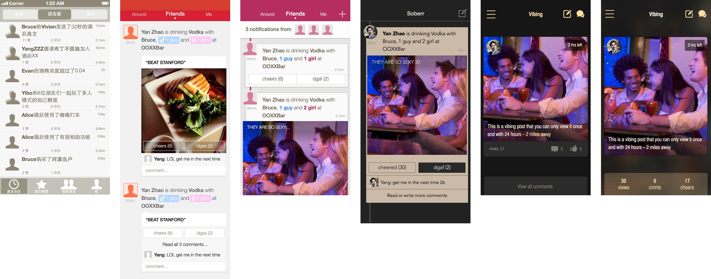
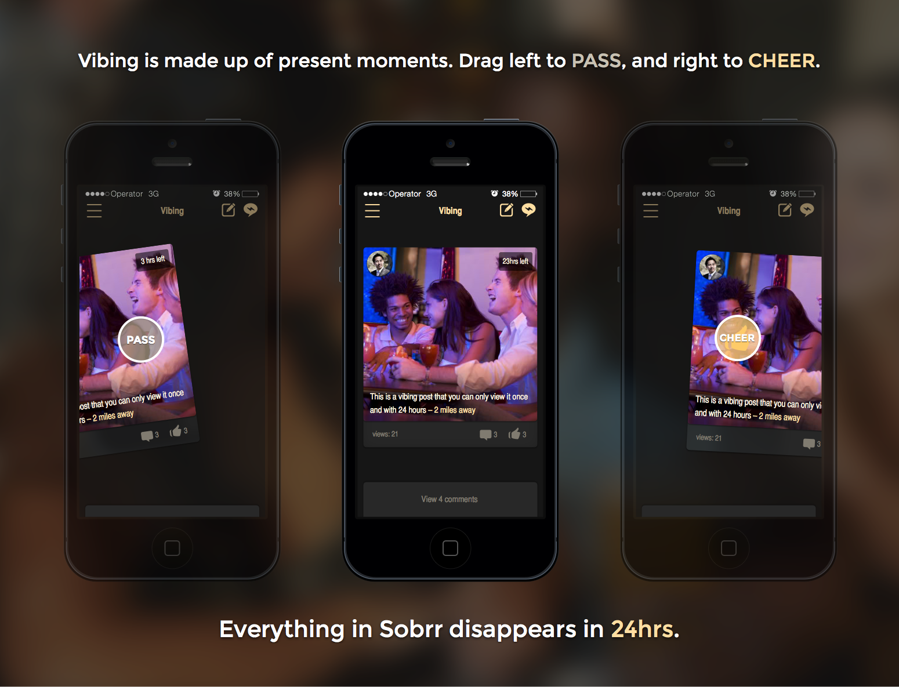
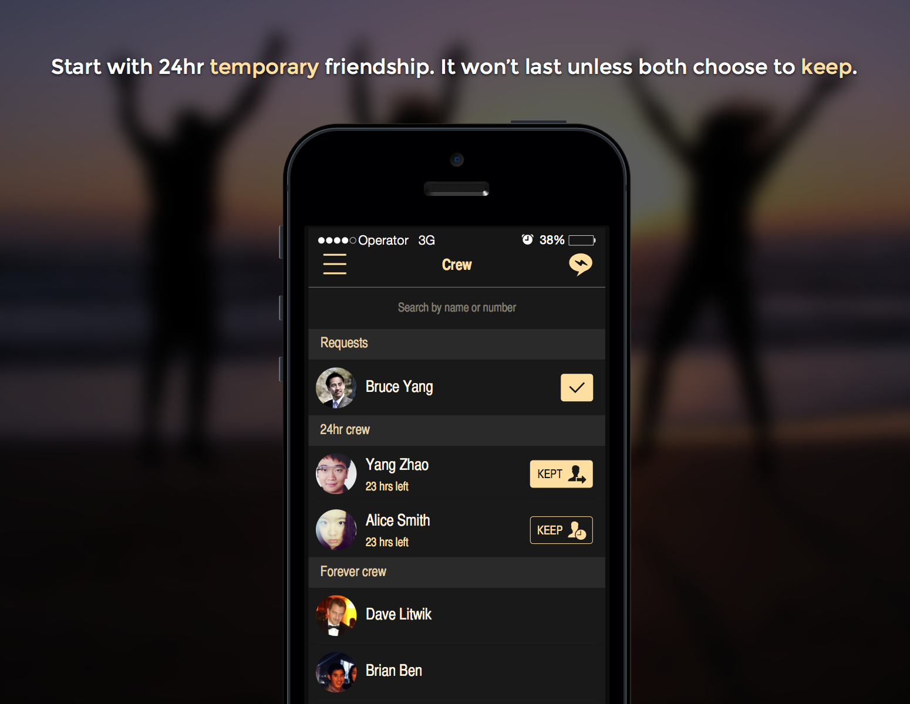
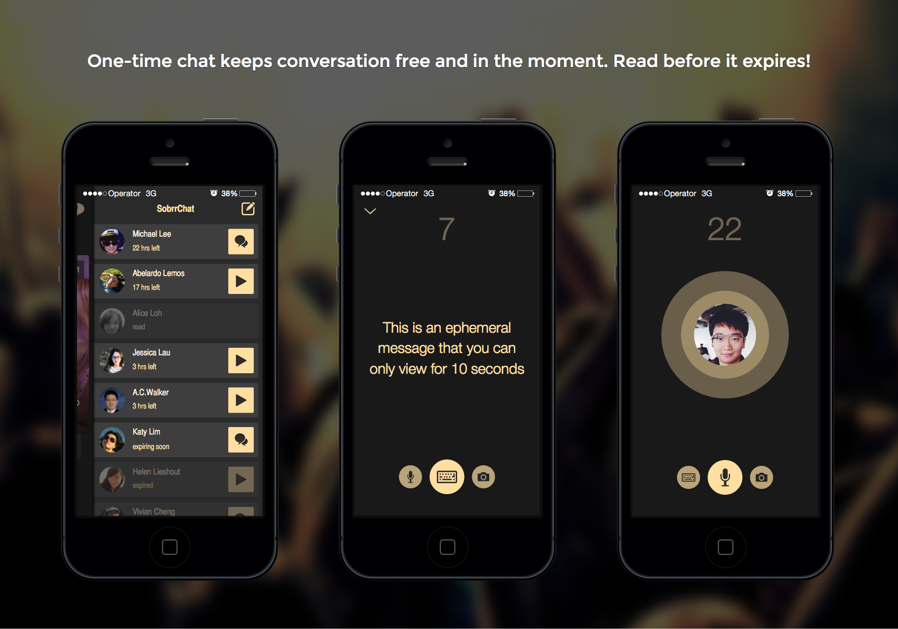

Sobrr
product design, new product developmentSketch, Photoshop, Illustrator, objective-C
Product goal
Throughout user research, we figured out that most people have been stressed to maintain a "positive image" on social networking sites. Often, people did not want to express their thoughts freely; even sometimes they did, they tended to delete their posts a couple of days later, just becuse they thought they looked silly.
On the other hand, Whisper and Secret cannot fulfill them either when they are entirely anonymous. People still want to be unique and individualistic.
So we created Sobrr, where we enjoy life in the moment.
My roles
As one of the core team members, I was involved in ideation, brainstorming, product management and development. Once the concept was set, I led the product design for the mobile app, website (Sobrr.me), and relevant marketing materials.
AppStore

Design iteration

Product design showcase


